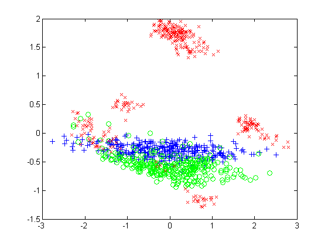
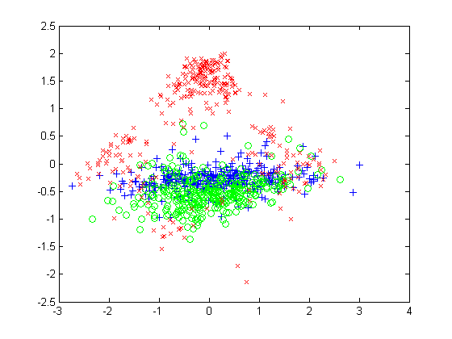
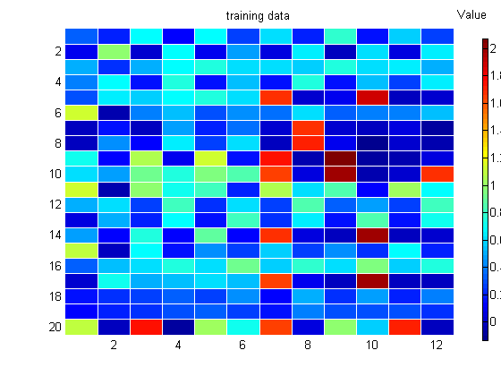
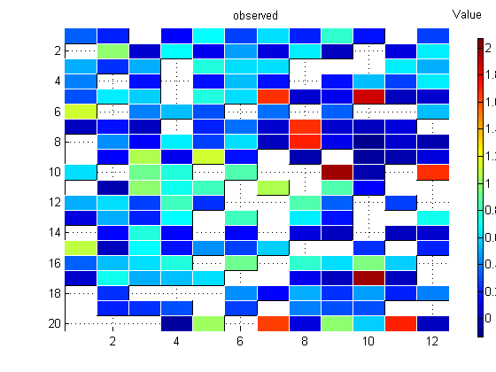
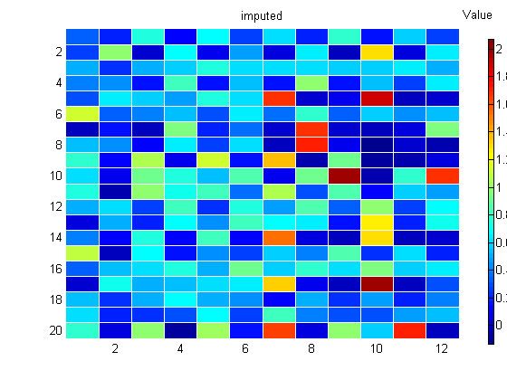

load oilflow3class
ndx = 1:1000;
X = DataTrn(ndx,:);
y = DataTrnLbls(ndx,:);
setSeed(0);
close all
[C, ss, mu, Z, Ximputed] = ppca_mv(X,2,false);
W = C';
markers = {'b+', 'go', 'rx'};
figure(10);clf
for c=1:3
ndx = find(y(:,c));
plot(Z(ndx,1), Z(ndx,2), markers{c});
hold on
end
printPmtkFigure('ppcaOil')
[n,d] = size(X);
missing = rand(n,d) > 0.7;
Xmiss = X;
Xmiss(missing) = NaN;
[C, ss, mu, Z, Ximputed] = ppca_mv(Xmiss,2,false);
W = C';
figure(11);clf
for c=1:3
ndx = find(y(:,c));
plot(Z(ndx,1), Z(ndx,2), markers{c});
hold on
end
printPmtkFigure('ppcaOilMissing')
ndx = 1:20;
hintonScaleMulti({X(ndx,:)}, {'map', 'jet', 'title', 'training data'}, ...
{Xmiss(ndx,:)}, {'map', 'Jet', 'title', 'observed'}, ...
{Ximputed(ndx,:)}, {'title', 'imputed'});
figure(1); printPmtkFigure('ppcaOilDataTrain')
figure(2); printPmtkFigure('ppcaOilDataMissing')
figure(3); printPmtkFigure('ppcaOilDataImputed')
    